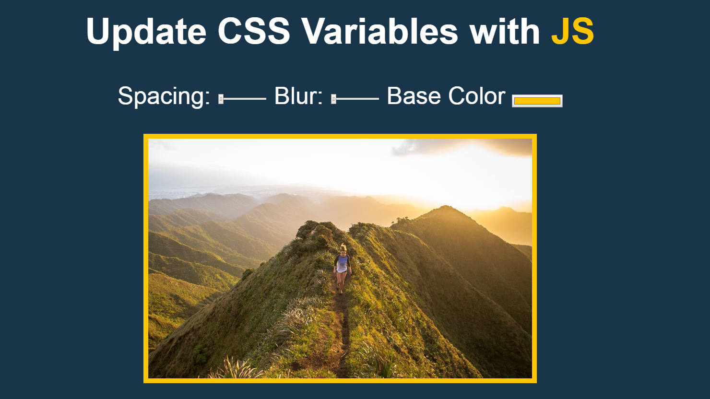

奇怪的小地方
我一直以為標題黃色JS是h1標題，結果他竟然是小寫的L，害我在css那邊改半天。1
<span class="hl">JS</span>
1 | .hl{ |
他是一個class名稱HL…((怪
認識 CSS 變數(Variables)
1 | :root { |
:root這個區域底下代表是全域的變數，裡面的變數用--兩個斜線加上自訂的變數名稱。
使用方式： var + (--name)
1 | img { |
監聽事件
原作範例是使用change 和 mousemove來達到事件觸發，但還有一個滿適合的監聽事件：input。
change必須指定的元素失去 focus 之後才會觸發，input則是當下就會觸發。
什麼人、在什麼時候、做什麼事
三個 input 選項(什麼人)在觸發 input 事件的時(什麼時候)要改變 CSS 全域變數(做什麼事)
這是很棒的切版
我們可以看到 input 裡面其實已經寫好很多我們(工程)可以用到的資料！
像是name和data-* attribute
如果不熟data-* attribute可以看Day1
1 | <input id="blur" type="range" name="blur" min="0" max="25" value="10" data-sizing="px"> |
這是我們一般切版可能不會注意到或沒有特別要求的，所以設計對資料的處理(設定)最好也要一定程度的熟悉
所以在這邊我們三個物件都呼叫同一個函示去做不同的事。
1 | var target = document.querySelectorAll(".controls input"); |
取得所有 input 再針對每一個(forEach)input 去做事件觸發，可以在 handler 中 console 確認每次觸發的 this 即是我們選取的物件(input)
dataset
利用 dataset 取的 data-* attribute 的值|| '' ‘’是因為顏色沒有設 data 所以設為空值。
第一看到可以這樣寫！大開眼界！我把他想成是待會要放的”單位”變數
1 | function handler() { |
documentElement
因為我們把css變數設定在:root下(全域)，
Document.documentElement 會回傳目前文件（document）中的根元素（Element），如：HTML 文件中的 <html> 元素。
這邊有詳細介紹
假設我們今天把把變數設定在body內：1
2
3
4
5body{
--color: #ffc600;
--spacing: 10px;
--blur: 10px;
}
那麼今天的寫法就會變成1
2//比較document.documentElement.style.setProperty()
document.querySelector('body').style.setProperty()
setProperty
幫對象的style新增一個屬性
這裡有更多說明。style.setProperty(propertyName, value, priority);
priority可以填入 “important” 如果没有指定,就是空字串。
程式碼
1 | const target = document.querySelectorAll(".controls input"); |
不用 10 行，太酷啦！
不負責任聲明ಥ◡ಥ：
純屬個人筆記，每個範例都有不同的寫法，還有很多細節可以加入，甚至可能有看不到的bug，有任何問題都歡迎提出一起研究哦，我會很感謝您的！沒有好不好，只有適不適合 - 2018.08.09